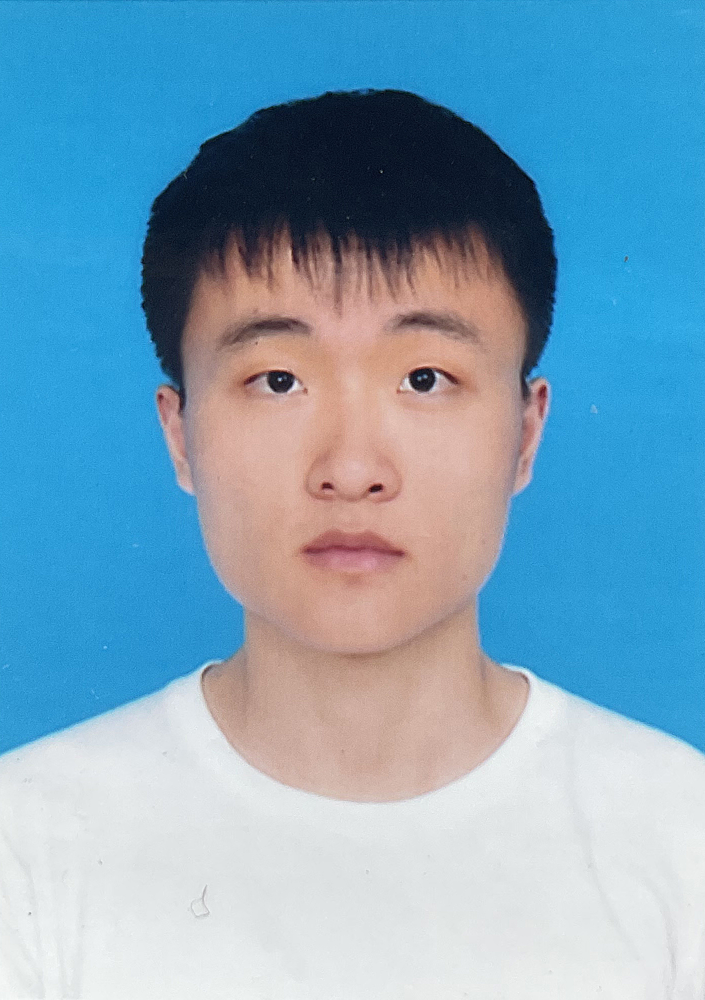
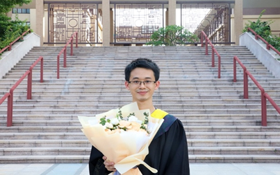

研究员
 Feng Liu, 刘峰
Feng Liu, 刘峰
正高级工程师 博导
研究方向: 信息对抗理论与技术，信息安全战略研究，网络攻防技术
联系方式
Institute of Information Engineering,
Chinese Academy of Sciences, Beijing 100085, China
办公地址: 北京市海淀区树村路19号
邮箱地址: liufeng(at)iie.ac.cn
Xiao-Yu Zhang, 张晓宇
研究员 博导
研究方向: 人工智能与深度学习，数据内容安全，计算机视觉与多媒体
联系方式
Institute of Information Engineering,
Chinese Academy of Sciences, Beijing 100085, China
办公地址: 北京市海淀区树村路19号
邮箱地址: zhangxiaoyu(at)iie.ac.cn
 Wen Wang, 王文
Wen Wang, 王文
副研究员
研究方向: 威胁发现、加密流量分析、网络对抗
联系方式
Institute of Information Engineering,
Chinese Academy of Sciences, Beijing 100085, China
办公地址: 北京市海淀区树村路19号
邮箱地址: wangwen(at)iie.ac.cn
 Peng Wang, 王鹏
Peng Wang, 王鹏
助理研究员
研究方向: 网络安全威胁情报
联系方式
Institute of Information Engineering,
Chinese Academy of Sciences, Beijing 100085, China
办公地址: 北京市海淀区树村路19号
邮箱地址: wangpeng3(at)iie.ac.cn
Huashan Chen, 陈华山
副研究员
研究方向: 网络系统安全度量、网络攻防演化博弈、区块链安全
联系方式
Institute of Information Engineering,
Chinese Academy of Sciences, Beijing 100085, China
办公地址: 北京市海淀区树村路19号
邮箱地址: chenhuashan(at)iie.ac.cn
 Haichao Shi, 石海超
Haichao Shi, 石海超
工程师
研究方向: 时序行为检测，行为识别，人工智能
联系方式
Institute of Information Engineering,
Chinese Academy of Sciences, Beijing 100085, China
办公地址: 北京市海淀区树村路19号
邮箱地址: shihaichao(at)iie.ac.cn
博士生


 Huaifeng Bao, 鲍怀锋
年级: 2019级 直博
专业: 网络空间安全
研究方向: 网络安全, 恶意代码, 终端威胁检测
邮箱地址: baohuaifeng(at)iie.ac.cn
硕士生
 Ziming Yang, 杨梓铭
年级: 2020级 硕士
专业: 计算机应用技术
研究方向: 计算机视觉, 模式识别, 生物特征安全
邮箱地址: yangziming(at)iie.ac.cn